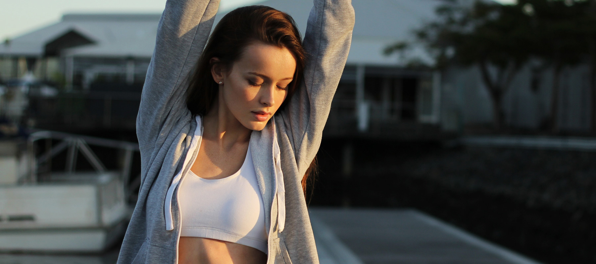
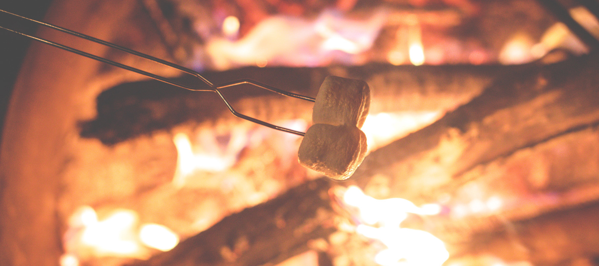

Natural Lite is a beautiful free theme for WordPress created by Organic Themes. It’s a perfect theme for business websites with a focus on the environment. Whether you’re providing fishing charters or surf adventures, promoting local farmers markets or saving the whales, offering vegetarian…
Archive
BRINGING SOME NATURE INTO YOUR WORK SPACE
Posted on January 13, 2016 by David Morgan
Natural Lite is a beautiful free theme for WordPress created by Organic Themes. It’s a perfect theme for business websites with a focus on the environment. Whether you’re providing fishing charters or surf adventures, promoting local farmers markets or saving the whales, offering vegetarian…
12 STRETCHES TO START YOUR DAY
Posted on January 13, 2016 by David Morgan

Natural Lite is a beautiful free theme for WordPress created by Organic Themes. It’s a perfect theme for business websites with a focus on the environment. Whether you’re providing fishing charters or surf adventures, promoting local farmers markets or saving the whales, offering vegetarian…
CAMPFIRE TALES FOR THE FAMILY
Posted on January 13, 2016 by David Morgan

Natural Lite is a beautiful free theme for WordPress created by Organic Themes. It’s a perfect theme for business websites with a focus on the environment. Whether you’re providing fishing charters or surf adventures, promoting local farmers markets or saving the whales, offering vegetarian…
2 comments